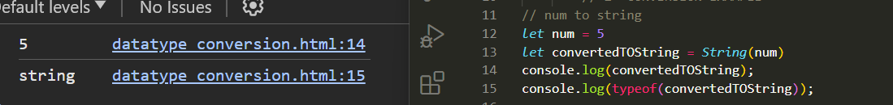
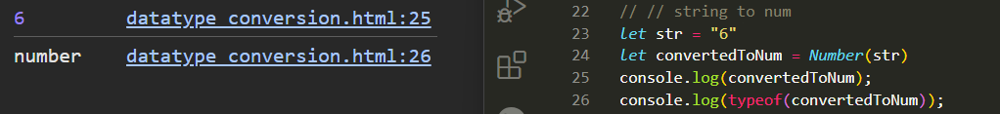
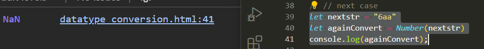
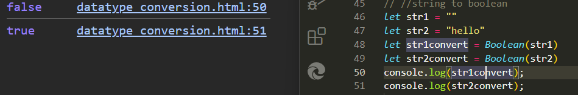
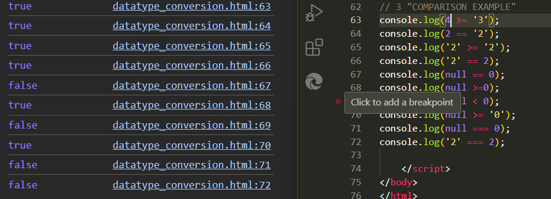
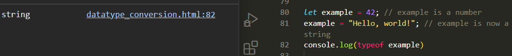

* Converting Data Types
1st Conversion : Number to String

2nd Conversion : String to Number

2.1 Special Case
If a string contains both numbers and letters in it and if we try to convert the string to number the result comes out to be NaN that is Not a Number

3rd Conversion : String to Boolean
Empty String = False
Non-empty String = True

* Comparison Examples

'===' '==' and '>=' operators work differently with null . Null is not equal to 0 but gives true when it comes to '>='.
JavaScript is a dynamically typed language. This means that the type of a variable is determined at runtime rather than at compile time.
In JavaScript, you don't have to declare the type of a variable when you create it, and the type can change as the program runs.
For example, a variable can be assigned a number at one point and later be assigned a string:

This dynamic typing offers flexibility but can lead to type-related errors that are only caught at runtime, which can sometimes make debugging more challenging.